| Tool |
Ingredients |
Recipe |
Product |
| Saw |
Hollow Cover | 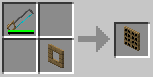 | Control Panel |
| Lever | 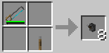 | Miniature Lever | |
| Button | 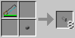 | Miniature Button | |
| Fixture | 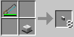 | Miniature Lamp | |
| Cover | 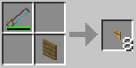 | Miniature Cover |
| Flush Mount |
Surface Mount |
| 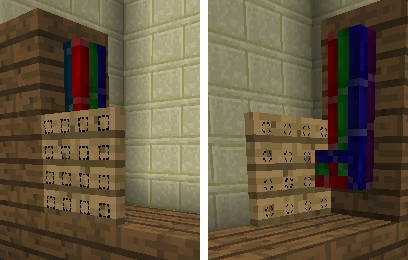 | 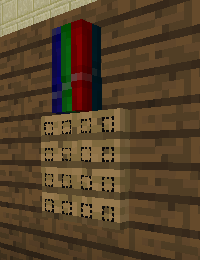 |
| The control panel is embedded in the wall, and bundled cable connects from the back. | The control panel is attached to the surface of another block, and bundled cable connects from the side. |
| On an empty cell |
On a control |
|
| Right Click |
Rotate control panel |
Pick up control |
| Shift Right click |
Change mounting orientation |
|
| Shift Left click |
Pick up control panel |
|
| Tool |
Spray Can |
Spray Can | ||
| Ingredients |
1 Button (full-size) 2 Iron Ingots |
1 Empty Spray Can 1 Milk 1 Egg 1 Dye |
Miniature Lever |
Miniature Button |
| Recipe |
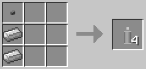 | 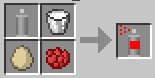 | 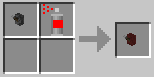 | 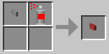 |
| Product |
Empty Spray Can |
Spray Paint |
Coloured Miniature Lever |
Coloured Miniature Button |